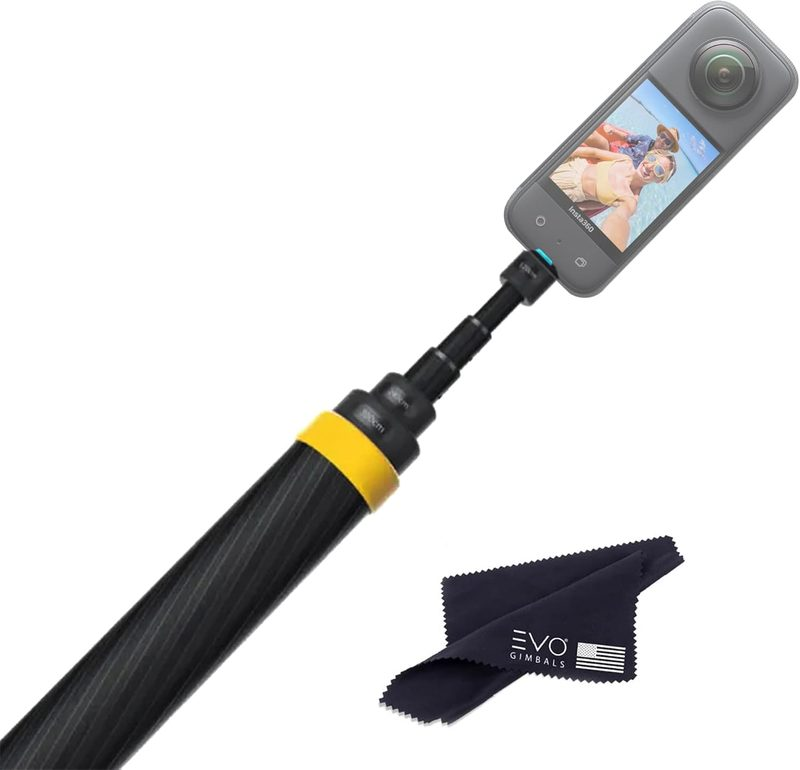

How to Capture Cinematic "Drone-Like" Overhead Shots With an Extended Monopod
Last updated: August 24, 2026 · Research-based guide · techpicksio.com
Quick answer: To get a "drone-like" perspective without a drone, pair a 3-meter (10ft) carbon fiber extended monopod with a 360 camera or a lightweight phone. Fully extended, and using "invisible selfie stick" software that erases the pole from the footage, you can capture high-angle tracking shots that mimic a low-flying aerial view — useful in no-fly zones and without needing a drone permit. Product notes below are based on manufacturer specs and user feedback, not hands-on testing.

Insta360 Extended Edition Selfie Stick (3m)
Best for creators who want an aerial-style shot in a no-fly zone or without a drone permit: at full 118" extension, this carbon fiber pole resists the flex that turns cheaper aluminum poles into a wobbly, unusable shot right when you need the pole steadiest. Pair it with "invisible selfie stick" software and the pole erases itself from the frame.
- Max length
- 300cm (118")
- Material
- Carbon fiber
- Weight
- ~365g
Best Extended Monopods for "Drone" Shots
| Model | Max Length | Material | Action |
|---|---|---|---|
| Insta360 Extended Edition | 300cm (118") | Carbon Fiber | Check Live Price |
| TELESIN Ultra Long Pole | 270cm (106") | Carbon Fiber | Check Live Price |
| SmallRig Selfie Stick | 150cm (59") | Aluminum | Check Live Price |
Step-by-Step: The "Fake Drone" Technique
- Choose carbon fiber over aluminum. When you extend a camera 10 feet up, any flex in the pole shows up as wobble in the footage. Carbon fiber stays rigid while remaining light enough to hold one-handed for a full take — this is the single most important factor at full extension.
- Align the pole with the camera's stitch line. On a 360 camera like the Insta360 X4, keeping the monopod in line with the stitch line lets the software erase the pole automatically, so the camera appears to float in mid-air.
- Walk slowly and use your body as a gimbal. Keeping the base of the monopod close to your center of gravity reduces the micro-jitters that on-camera stabilization (FlowState, Horizon Lock) has to correct for, giving smoother results.
👍 Advantages
- ✅ No drone regulations or flight permits required
- ✅ Works in no-fly zones where drones are banned
- ✅ Packs down to fit in a standard backpack
👎 Limitations
- ❌ Requires steady wrists and a smooth walking gait
- ❌ Not suitable for heavy DSLR setups
Frequently Asked Questions
Can you get drone-like shots without a drone?
Yes. A 3-meter extended monopod paired with a 360 camera produces high-angle tracking shots that resemble a low-flying aerial view. The 360 camera's software erases the pole from the footage, so the camera appears to float.
Why use a monopod instead of a drone?
No flight permits or drone regulations apply, and it works in no-fly zones where drones are banned outright, such as many national parks and urban areas. It also packs into a normal backpack.
Why does carbon fiber matter for a long selfie stick?
At full extension, any flex in the pole shows up as visible wobble in the footage. Carbon fiber stays rigid while staying light enough to hold one-handed through a full take, which aluminum poles struggle with at 3 meters.
What camera do you need for the invisible selfie stick effect?
A 360 camera, such as an Insta360 model. The effect relies on the camera's stitch line hiding the pole, which standard phone cameras cannot replicate.